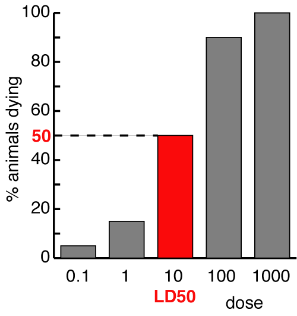

EC50 & ED50
It is sometimes useful to be able to compare drugs objectively and a variety of terms to which numbers can be attached are used.
The EC50 is the concentration at which a drug produces 50% of its maximal effect. This only applies to in vitro preparations since the drug concentration cannot usually be measured in patients at the site where it is thought to act. (IC50 is the concentration where 50% inhibition occurs.)
The ED50 is the dose at which a drug produces a quantal response in 50% of animals; eg. the minimal alveolar concentration of an anaesthetic is the dose (despite the name) which stops 50% of animals responding to a supramaximal stimulus (often skin inciscion). ED50 and EC50 are not interchangeable, and do not mean the same thing. The LD50 is the dose which kills 50% of animals; ie, a specific type of ED50.
The therapeutic index is the ratio of LD50 : ED50. A high therapeutic index indicates a safe drug, a drug such as digoxin has a therapeutic ratio close to one! It is rarely ethically justifiable to kill animals to work out the LD50, so the dose which is toxic to 50% is sometimes used instead. However, toxicity is not really a quantal effect, so this approach has not caught on yet. In people, the number needed to harm (NNH) is sometimes used. This is the number of patients who would have to be treated to see serious side effects in one case.
Some types of toxicity are not related to dose (they are usually immune mediated) and the therapeutic ratio gives no useful info about these.

The LD50 - the most extreme form of ED50. In this case, a dose of 10 kills 50% of animals to which it is given
| 2 Basics index |
| |
copyright
Massey University
|